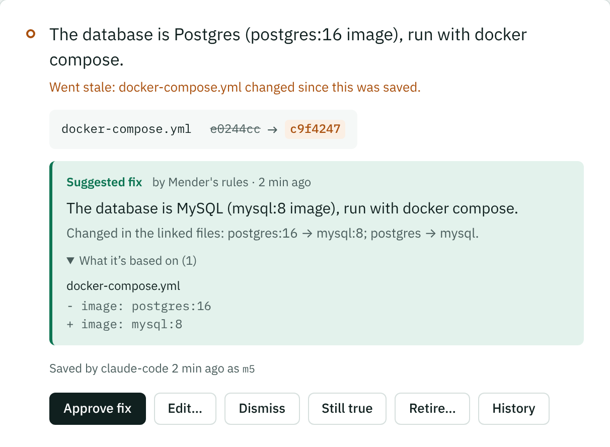
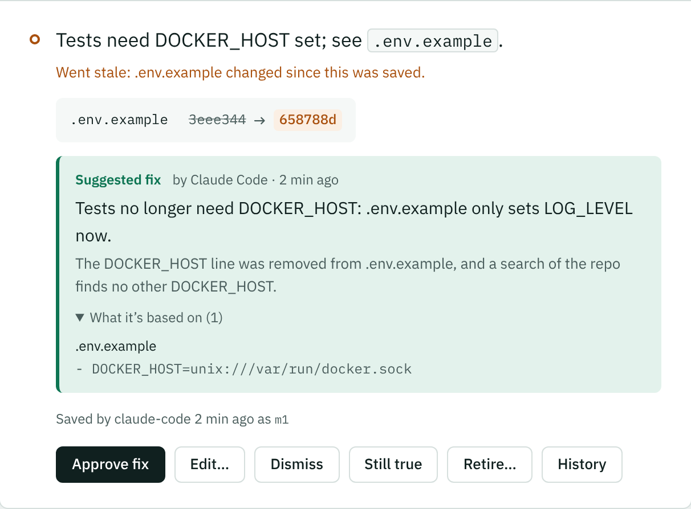
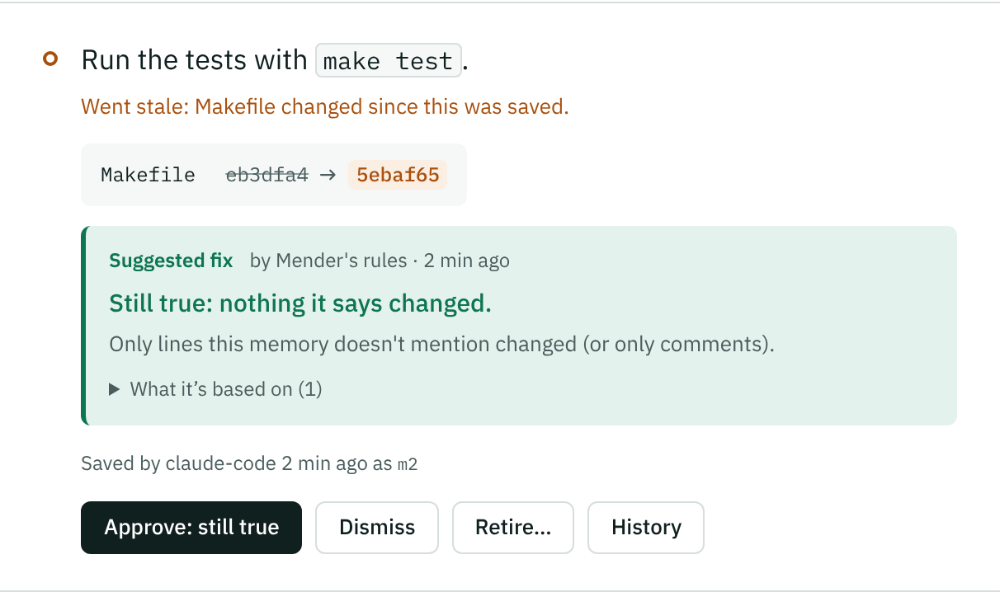

BetaMender, part of Mnemolith 0.3
Mnemolith catches it. Mender drafts the fix. You approve it.
When a code change makes a memory stale, Mender drafts what’s true now and puts it next to the diff in your dashboard. Simple changes are drafted by plain rules on your machine; the AI tool you already use drafts the rest. No API key, and nothing changes until you approve it.
Already have Mnemolith? Turn it on:
mnemolith mender on

What changes with Mender
-
Your code changes
Needs a decision 3
Three memories went stale. Without Mender, someone has to work out what’s true now for each one and type it in.
-
Mender
Fixes drafted
Each stale memory gets a suggested fix under the diff it came from. You approve, edit or dismiss it.
-
A few clicks later
Nothing to decide
Your AI tools see the new facts from their next session. The old ones keep their history.
Flagging a stale memory is half the job.
AI coding tools trust what they’ve saved. When the code changes, a memory like “we use Postgres” quietly becomes wrong, and the AI keeps acting on it.
Mnemolith already notices: it links each memory to the files it depends on and flags it when they change. But a person still has to work out what’s true now and retype it. That step is easy to skip, so stale memories pile up. Mender does the reading and the drafting, and leaves you the decision.
See it in 20 seconds.
A file changes, Mnemolith flags the memory it made wrong, and Mender drafts the fix. One click and your AI tools have the new fact.
From a changed file to a corrected memory.
Mender tries plain rules first, because many changes are mechanical. Whatever needs judgment goes to the AI tool you’re already using.
-
1
Mnemolith
Detect
A memory’s linked file changed, committed or not, so it’s marked stale and your AI stops relying on it.
-
2
Mender’s rules, on your machine
Draft the simple ones
Compares the file version the memory was saved against with the file now. A swapped value, a version bump or a moved file is rewritten into the memory. Only comments or unrelated lines changed? It suggests the memory is still true.
-
3
Claude Code, Cursor or Codex
Draft the rest
Your AI tool sees what changed with
list_stale, checks the repo, and submits a draft withpropose_fix. Mender checks it against the code before you see it. -
4
You
Review
Approve, edit or dismiss each draft in the dashboard. Approving replaces the old memory with the new one, linked to the current files. History is kept.
It drafts. You decide.
A tool that rewrites your AI’s memory has to be careful about what it writes. These rules are enforced in code, not left to a model.
No silent rewrites
Drafts wait in the dashboard until you approve them. Dismissing one changes nothing, and any fix you approved can be reverted later.
Stale-draft guard
Each draft remembers the exact file versions it was based on. If a file changes again before you approve, approval is refused and the draft is redone, so Mender never saves a fact that’s already out of date.
Checked against the code
Quotes in an AI tool’s draft, and any new numbers or versions, must actually be in the files. If not, the draft is marked Unverified.
Renames aren’t deletions
A moved file is recognized, and the draft updates the path instead of calling the fact obsolete.
Rules never guess
If a change needs judgment, like a deleted file or a removed setting, the rules leave it alone for you or your AI tool.
No double fixes
If a memory was already settled some other way, approving does nothing and the draft is dropped.
Right where you already decide.
Drafts show up in the dashboard’s Needs a decision list, each under the change it came from, with what it’s based on. These are from a real run.

propose_fix.
Turn it on.
Mender comes with Mnemolith 0.3. There’s nothing else to install and no key to set up. It needs:
- Your project in a git repo, so Mender can read the file version each memory was saved against
- For drafts that need judgment: Claude Code, Cursor or Codex, connected to Mnemolith
New to Mnemolith? Setup asks
curl -fsSL https://mnemolith.dev/install.sh | sh
Answer yes to “Turn on Mender?”. Windows and other ways to install are on the install page.
Already have it? Upgrade, then turn it on
uv tool upgrade mnemolith && mnemolith mender on
Installed with pipx or pip? Upgrade with that instead. Restart open AI tools so they offer to draft fixes.
Review drafts in the dashboard
mnemolith ui
Want them in the terminal first? mnemolith mend drafts fixes for the repo you’re in and lists them.
Common questions
Short answers about what Mender changes, what it sends, and what it costs.
Does it change my memories without asking?
No. Every draft waits in the dashboard until you approve it. Dismissing a draft leaves the memory exactly as it was, still waiting for your decision.
Does my code leave my machine?
Not because of Mender. The rules run on your computer and send nothing anywhere. For drafts that need judgment, your AI tool reads the change and your repo the same way it does whenever you work with it; Mnemolith itself doesn’t call any model or service.
Does it cost anything?
No. Mender is part of Mnemolith, which is free and open source, and it needs no API key. Drafts from your AI tool count toward that tool’s usage like any other request.
What can the rules handle on their own?
A value that was swapped (postgres:16 to
mysql:8), a version bump (redis==5.0.0 to
5.2.1), a moved file, and changes that don’t touch
what the memory says, like comments or unrelated lines. Anything
else, like a deleted file or a removed setting, is left for you or
your AI tool.
Do I need Mender to use Mnemolith?
No. It’s optional. With it off, Mnemolith works exactly as before: stale memories show up in the dashboard and you decide them yourself.
Can I take back a fix I approved?
Yes, any time. Right after approving there’s an Undo. Later,
open the memory in the dashboard and click Revert this
fix: the old memory comes back for you to decide, and Mender
won’t suggest the same fix again unless the files change. From
a terminal: mnemolith mender revert m7.
What if a draft is wrong?
Edit it before approving, or dismiss it. If you change a file again before reviewing, the old draft can’t be approved, and a fresh one is made.